كيفاش تخدم بـ Product Lab
المكان اللي نخدمو فيه أنا وأزر مع بعضنا: من الفكرة حتى الإعلان والنتيجة. كل حاجة يعملها واحد، الآخر يشوفها في ثانية، ويتسجّل شكون عملها.
الصور اللي تحت فيها أمثلة باش تفهم. الأرقام متاعك تتبدّل.
1. الدخول Login
- حلّ xbezprv.github.io/product-lab.
- اختار اسمك: yassin ولا azer.
- أول مرة: اكتب الكلمة السرّية اللي تحب عليها (6 حروف ولا أكثر). هي تولّي متاعك.
- بعد هكا، تقعد داخل على نفس التليفون ولا الكمبيوتر 90 يوم.
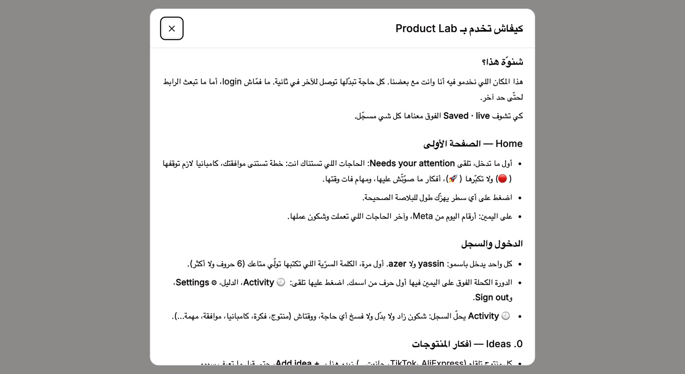
ما تعطيش الكلمة السرّية متاعك لحد. كل واحد يدخل باسمو، باش السجل يقول شكون عمل شنوّة.
2. الصفحة الأولى Home
أول ما تدخل، تلقى كل شي يستناك انت:
- Needs your attention: كامبانيا لازم توقفها (🔴)، ولا تكبّرها (🚀)، خطة تستنى موافقتك، أفكار ما صوّتّش عليها، ومهام فات وقتها. اضغط على أي سطر يهزّك طول للبلاصة.
- Ads · last 7 days: كل كامبانيا مع المصروف، الكوموندات، والـ flag.
- Today: أرقام اليوم من Meta.
- Recent activity: آخر الحاجات اللي تعملت وشكون عملها.
- الأزرار + Idea، + Task، + Campaign باش تزيد بسرعة.
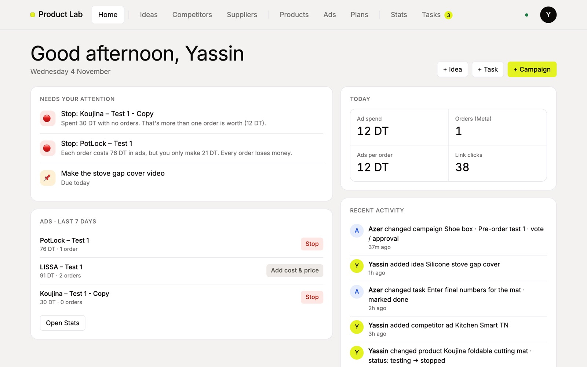
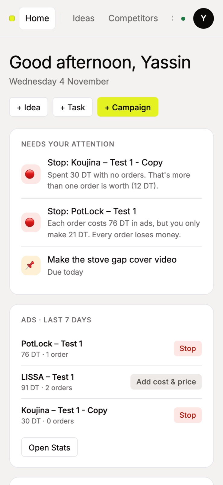
التابات الفوق
مقسومين على 3:
- Ideas · Competitors · Suppliers: نلقاو المنتوج.
- Products · Ads · Plans: نجرّبوه.
- Stats · Tasks: نتبعو النتائج والخدمة.
3. الأفكار Ideas
كل منتوج تلقاه يدخل هنا قبل ما نصرفو عليه حتى مليم.
- اضغط + Add idea: الاسم، منين لقيتو (Found on)، الكلفة، السوم اللي نبيعو بيه، والوزن.
- كل فكرة تاخذ نقطة على 6 قواعد. الثلاثة الأولين يتحسبو وحدهم من الأرقام: رخيص (10 د.ت ولا أقل)، خفيف (500 غ ولا أقل)، ربح 3 مرات. الثلاثة الأخرين تجاوب عليهم: ما يتكسّرش، فيديو ساهل، ما يتلقاش رخيص في تونس.
- الكرت يورّي: النقطة (6/6)، الحالة، Ready x/4، كم منافس والسوم متاعهم، والتصويت.
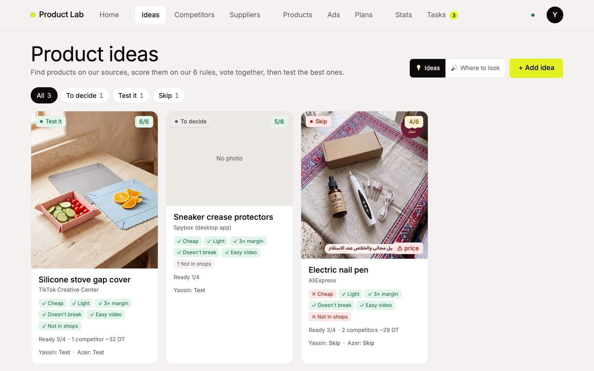
السوم المقترح والتحذير
اضغط على فكرة. في Price تلقى سوم المنافسين، وسوم مقترح: على الأقل 3 مرات الكلفة، وشوية تحت متوسط السوق.
- كان السوم متاعنا أغلى من السوق، يطلع ⚠ أحمر. المثال هذا: قلم الأظافر بـ 89 د.ت والسوق بين 23 و35.
- Use … DT يحطّ السوم المقترح بضغطة. + Add a competitor ad يزيد منافس مربوط بالفكرة هذي.
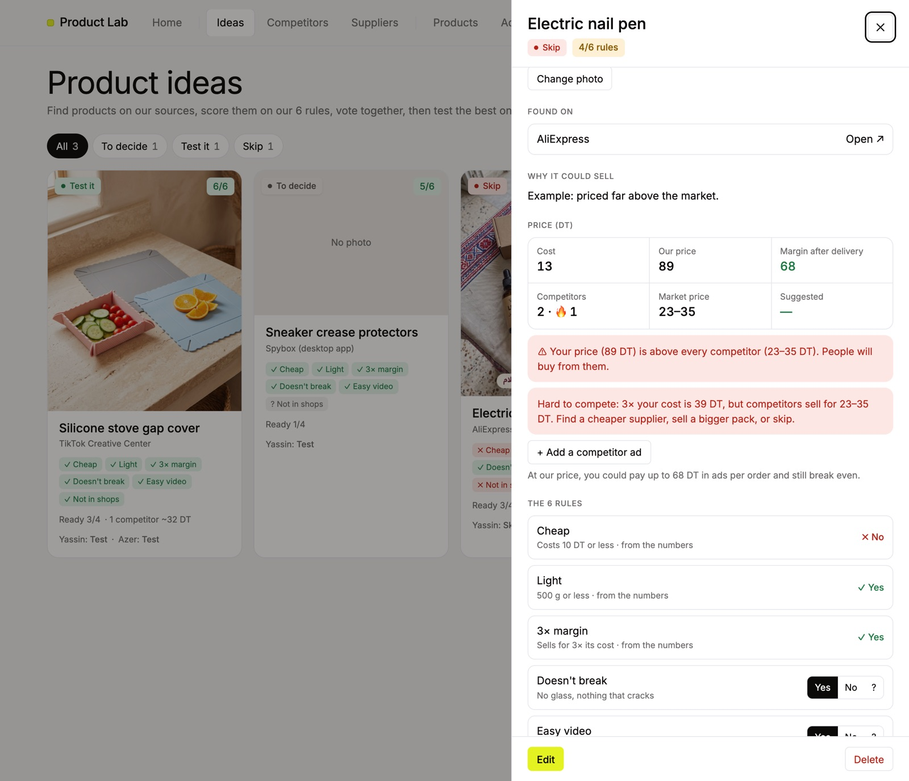
التصويت و Ready to test
- صوّت 👍 Test it ولا 👎 Skip. كي نصوّتو الزوز نفس الحاجة، الفكرة تتبدّل وحدها.
- قبل ما نجرّبو، لازم الـ 4 يكونو ✓: شفنا المنافسين، لقينا مورّد، عندنا فكرة الفيديو، وقرّرنا السوم.
- اضغط Move to Products. كان مازال ناقص حاجة، يسألك مرة أخرى.
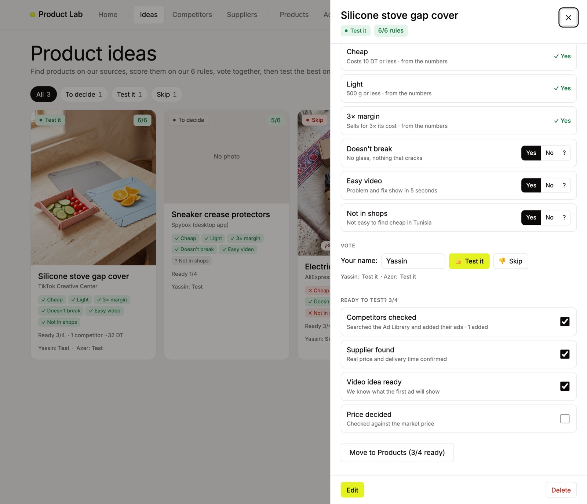
4. وين نلقاو المنتوجات Ideas → Where to look
- في تاب Ideas، الفوق على اليمين، اضغط 🔎 Where to look.
- تلقى السيتات مقسّمين: أدوات التجسس (Meta Ad Library، TikTok، Spybox…)، سيتات الاختراعات، أسواق قريبة (Jumia، Noon…)، الموردين.
- اضغط على اسم السيت يتحلّ. كي تلقى منتوج، اضغط + Idea تحت نفس السيت، يتسجّل وحدو منين جا.
- تحت كل سيت: كم فكرة جات منو، وكم وحدة قرّرنا نجرّبوها. هكا نعرفو أنا سيت يعطينا أحسن أفكار.
- سيت جديد؟ + Add source.
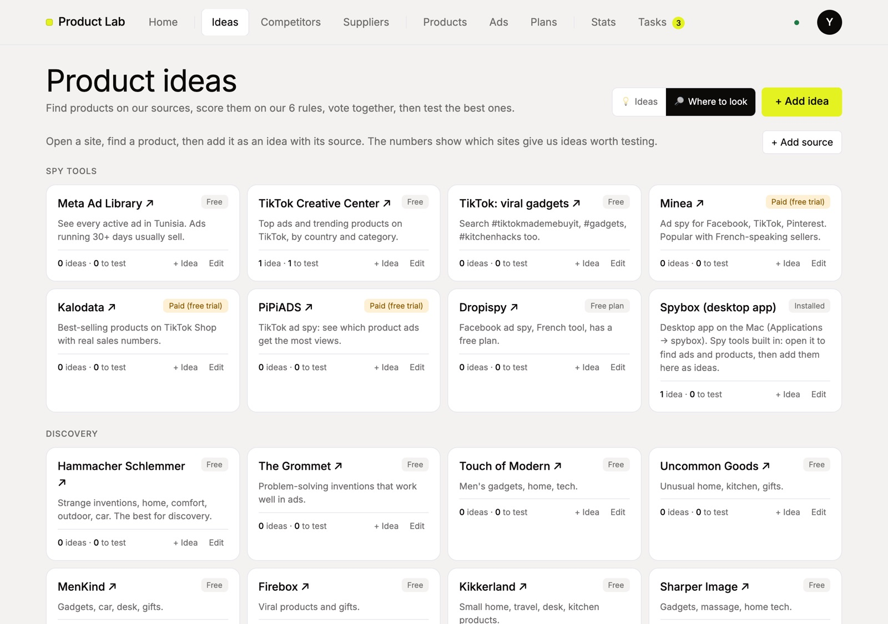
5. المنافسين Competitors
- اضغط Open Ad Library ↗: يتحلّ على تونس. اكتب اسم المنتوج.
- كل إعلان تلقاه: screenshot، ومبعد + Add competitor ad: اسم الصفحة، السوم، العرض، الـ angle، ووقتاش بدا.
- اربطو بالفكرة ولا المنتوج متاعنا، باش السوم المقترح يتحسب.
- 🔥 = الإعلان يدور من أكثر من 30 يوم، يعني غالبًا يبيع.
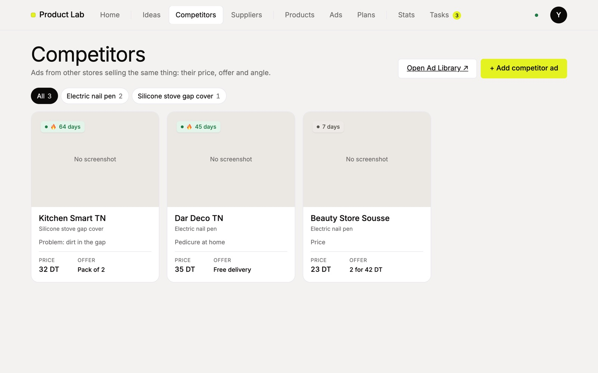
6. الموردين Suppliers
- كل مورّد كلّمناه: التليفون، الإيميل، السوم، وأقل كمية.
- الحالة: To contact → Waiting reply → Quoted → Chosen ولا Rejected.
- اضغط على مورّد، زر Copy ينسخ النومرو باش تبعث WhatsApp.
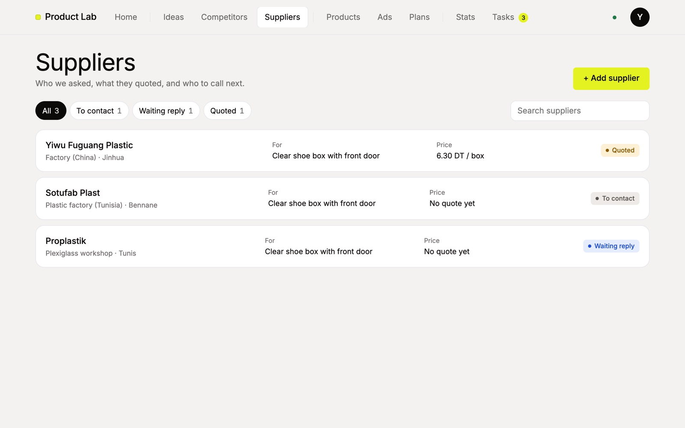
7. المنتوجات Products
- المنتوجات اللي نجرّبو فيها ولا جرّبناها. الحالة: Sourcing → Testing → Winner ولا Stopped.
- اضغط على منتوج: الصورة، المشكلة اللي يحلها، الأرقام، السكريبت (مع زر Copy)، والموردين.
- المربّع الملوّن يقلك: قدّاش تنجم تصرف إعلانات على كوموند وحدة وما تخسرش.
- ما تكتبش الأرقام كل نهار. كي يوفى التست، اكتب المصروف والكوموندات مرة، وبدّل الحالة.
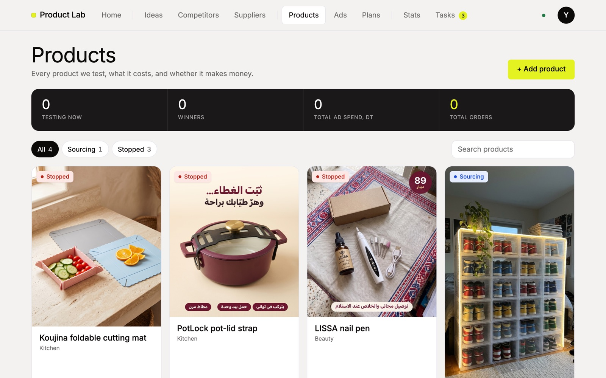
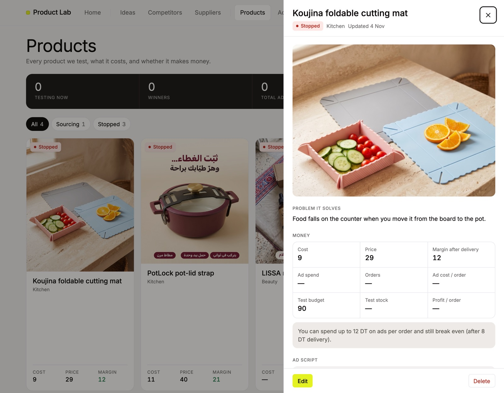
8. الإعلانات: الخطة والمراجعة Ads → By campaign
أ. المكتبة: + Upload video / image
كل فيديو ولا تصويرة نحطّوه مرة وحدة. سمّيه بكود في الأول: V3 · LED wall (V فيديو، S تصويرة). اكتب الـ angle والـ hook.
ب. نعملو الخطة (Planned · not live yet)
- + New campaign: الاسم يبدا باسم المنتوج (Shoe box – Test 2)، الميزانية، والقواعد.
- حلّ الكامبانيا ← + Add ad set: الـ angle، الجمهور، الميزانية.
- حلّ الـ Ad set ← + Add ad: اختار الفيديو من المكتبة، النص، الـ Headline، والزر.
- كي الإعلان حاضر، علّم Ready to publish.
ج. المراجعة (على اليمين)
- اللي عمل الخطة: يضغط Send for review. تولّي In review، وموافقتو تتحسب.
- الآخر: يتفرّج، يكتب ملاحظة، ويضغط Approve. تولّي Approved.
- ننشروها في Ads Manager بنفس الأسماء، ومبعد Published on Meta: mark live.
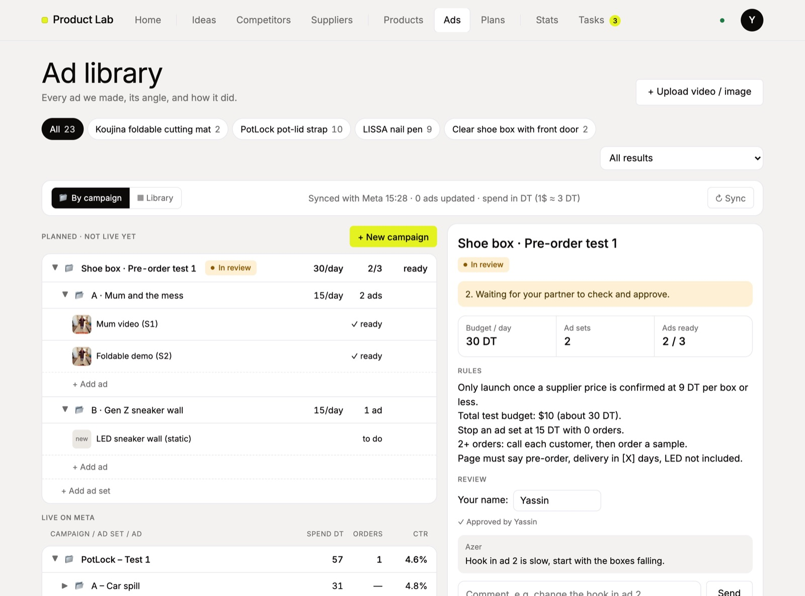
ما ننشرو حتى حاجة في Meta قبل ما تولّي Approved.
9. الإعلانات: النتائج Ads → Live on Meta
- الكامبانيات الحقيقية تجي وحدها من Meta: كامبانيا ← Ad set ← إعلان، مع المصروف بالدينار، الكوموندات، والـ CTR.
- اضغط على إعلان: الفيديو متاعو والأرقام على اليمين.
- باش يتربط وحدو بالفيديو، سمّي الإعلان في Ads Manager بنفس الكود: A1 – V3 video.
- إعلان عليه ? = مش مربوط. اختار الفيديو متاعو من القائمة على اليمين، مرة وحدة.
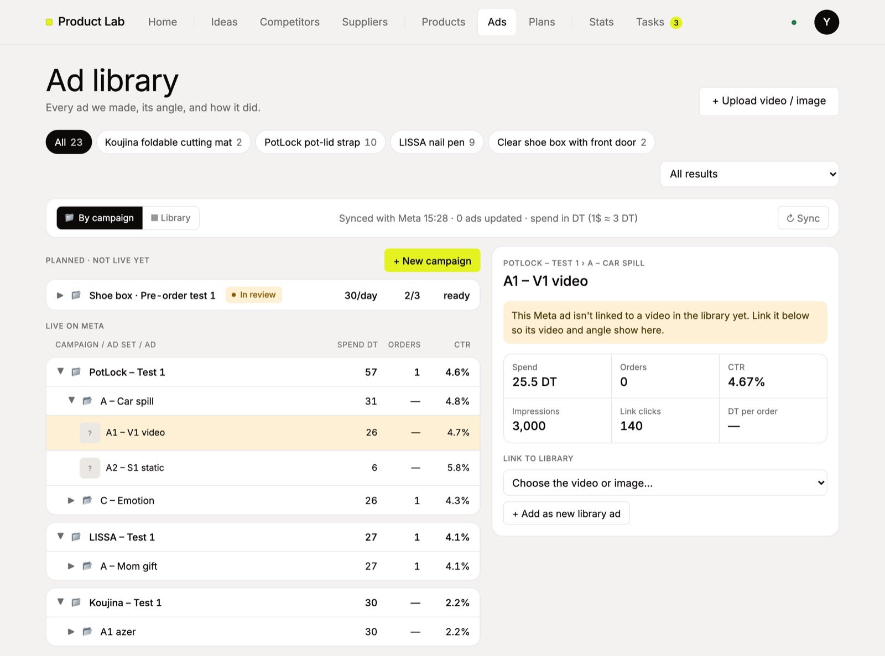
في ▦ Library: كل الفيديوات، وجدول Which angles work يقلك أنا فكرة جابت كوموندات بأرخص سوم.
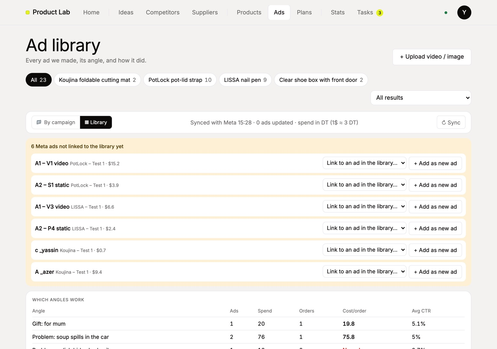
10. الإحصائيات والـ flags Stats
- اختار المدّة (Today، 7، 14، 30 يوم) واضغط Refresh.
- Funnel: زيارات، مشاهدة منتوج، كوموندات، من الناس اللي جاو من الإعلانات.
- Ad account: المصروف بالدولار وبحذاه بالدينار (الدولار ≈ 3 د.ت).
- What to do: كل كامبانيا عندها flag مع جملة تفسّر علاش.
- كوموند جات في WhatsApp ولا تليفون من إعلان؟ اضغط + قدّام الكامبانيا.
| Flag | وقتاش | شنوّة نعملو |
|---|---|---|
| 🔴 Stop | صرفنا أكثر من ربح كوموند وحدة وما جاتش كوموند، ولا الكوموند تكلّف أكثر من ربحها، ولا CTR تحت 1% | نوقفو |
| ⚪ Too early | ما فمّاش كوموند، أما صرفنا شوية | نستناو |
| 🟡 Watch | كوموند ولا زوز | نجرّبو hook جديد |
| 🟢 Winning | 3 كوموندات ولا أكثر، أرخص من الربح | نخلّيوه |
| 🚀 Scale | 5 ولا أكثر، أقل من 70% من الربح | نزيدو الميزانية 20–30% كل 2–3 أيام |
Break-even = سوم البيع − الكلفة − 8 د.ت توصيل. هذا أكثر ما نجمو نصرفو في الإعلانات على كوموند وحدة.
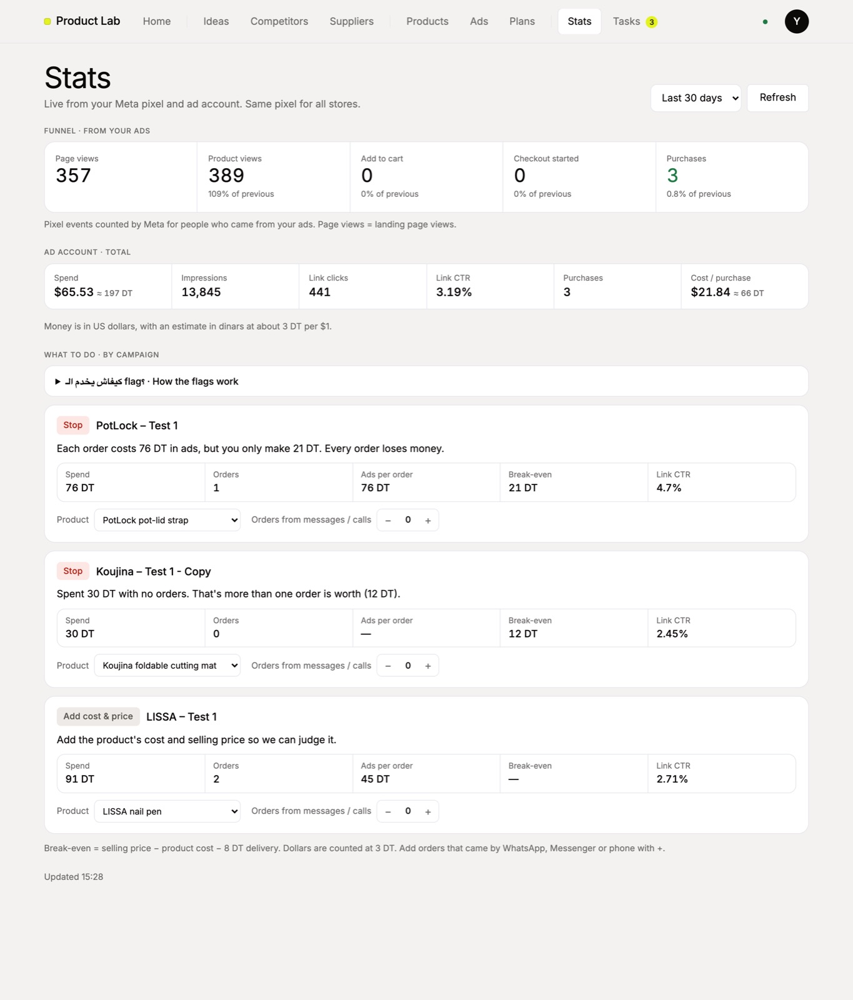
11. المهام Tasks
- اكتب المهمة، شكون باش يعملها، والوقت. اضغط Add task.
- كي تكمّل، علّم المربّع. الأحمر = فات الوقت، الأصفر = اليوم.
- الفوق تنجم تختار تشوف المهام متاعك برك.
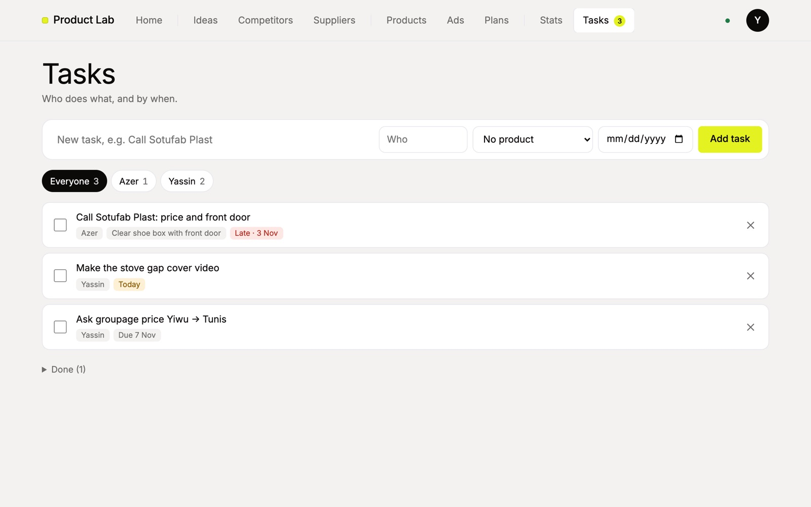
القواعد متاعنا
- ما نصرفو حتى مليم على منتوج قبل ما نعرفو سومو الحقيقي من مورّد.
- نشوفو المنافسين قبل ما نقرّرو السوم. ما نبيعوش أغلى من السوق.
- ما ننشرو حتى كامبانيا قبل ما نوافقو عليها الزوز.
- كي الـ flag يقول 🔴 Stop، نوقفو نفس النهار.
- كي يقول 🚀 Scale، نثبّتو في Converty الأول (كوموندات رجعت؟) ومبعد نكبّرو.
- نحلّو الموقع مرة في الجمعة على الأقل، باش ما يوقفش.